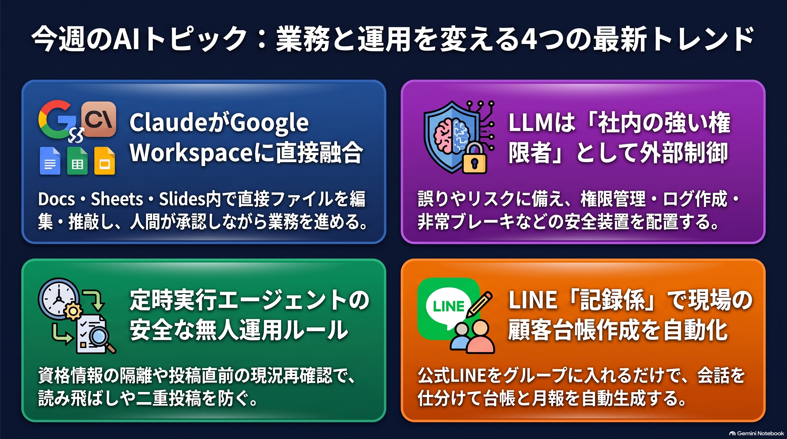
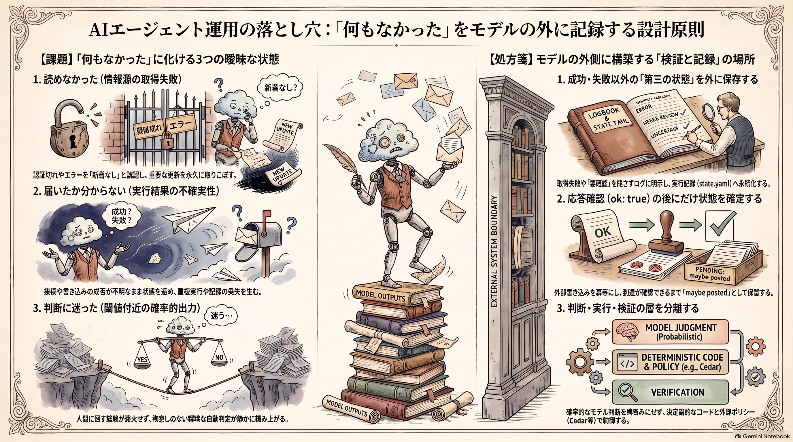

Weekly Insights: 2026-W42（2026-10-12〜10-18）
今週のホットトピック

- claude-google-workspace Claude が Google Docs・Sheets・Slides の中で動く — @claudeai が発表した双方向の連携です。サイドバーの Claude が開いているファイルを直接編集し、反映前に1件ずつ承認できます。今週最多の約2.1万ブックマークでした。
- models-as-insider-risks モデルを「社内の強い権限者」として扱う — Microsoft CEO の Satya Nadella が、権限・観測・停止の制御をモデルの外側に置くべきだと論じ、観測可能性の7原則を挙げました（約1.8万ブックマーク）。
- scheduled-agent-automation 定時に動くエージェントの6つの設計ルール — Anthropic が Slack・GitHub を定時に読んで要点を投稿する参照実装 daily-brief を公開しました。同じ週に Max・Team プランへ月次 API クレジットが付き、これを動かす費用の当てができました。
- line-group-ai-crm LINE グループに「記録係」を入れて顧客台帳を作る — 地方のリフォーム・塗装会社で、発言を Claude API で仕分け、迷った発言だけ「要確認」に回す導入支援の実例です（安松谷直登による自己申告）。
深掘り
claude-google-workspace 業務ツールの中に入る Claude 読みどころは機能の新しさより、「編集は1件ずつ、反映前に承認できる」という書き込みの渡し方です。AI に書かせる範囲を、利用者が編集単位で決める側に置いています。ただし告知の動画は未収集で、承認の粒度・対応プラン・読み込み範囲がどこまで及ぶかは分かっていません。現時点で言えるのは設計の向きまでで、使い勝手の評価は実物を触るまで保留です。
models-as-insider-risks 制御をモデルの外に置く Nadella の出発点は、いまのモデルは出力を重みや学習データに遡って説明できない、という点です。そこから「悪意が無くても誤り得るし乗っ取られ得る強い権限者」として、企業が人間に対して磨いてきた最小権限・活動ログ・封じ込めをそのまま当てはめよ、と主張します。7原則のうち「Observe everything」は、結果に至る過程をモデルの自己申告に頼らず再現できるようにせよ、という要求です。締めの一文は「最も信頼できるシステムは、モデルを最も信頼しなくて済むシステムになる」でした。
scheduled-agent-automation 「静かな日」と「読めなかった日」を分ける 6ルールの多くは、無人実行で起きる取り違えへの対策です。トークン切れで情報源を読めなくても実行は始まり、エージェントは「新着なし」と報告してしまいます。そこで読めなかった情報源を末尾に明記させます。投稿が届いたか不明なら「maybe posted」と記録して、ほかの状態は動かしません。予算上限に達した実行は失敗せず一時停止するため、低すぎる上限は「ブリーフが静かになった」ように見える、という指摘もあります。Max 5x で月 $100、Max 20x で月 $200 のクレジットが Managed Agents に使えるので、このような無人実行を試す費用の障壁は下がりました（claude-plan-api-credits）。
line-group-ai-crm 迷ったものは台帳に書かない 安松谷は「新しく書いてもらうのをやめて、LINE に書いたものを裏で写す」を芯に置きました。そのうえで、AI が迷う発言（1通に2人分の話が混ざる等）は台帳に書かず「要確認」へ回し、「間違ったまま台帳に入る方が後で大変」だと述べます。既存の約870行を整理すると、ステータスが「現調」のまま止まった行が8割ありました。その後の見積・受注・失注が、現場と事務の間で記録から抜けていたのです。AI 導入の前から、台帳の中に「止まっているのか、終わったのか分からない」状態が大量に眠っていた、という実例として読めます。
今週の中心テーマ
無人で回すエージェントを安く動かせるようになった週に、素材が揃って設計していたのは、成功でも失敗でもない状態でした。読めなかった・届いたか分からない・判断に迷った——この3つを「何もなかった」に化けさせず、モデルの外に記録する場所です。

今週の素材を並べると、同じ手が別々の現場で使われています。daily-brief は、読めなかった情報源を明記させ、届いたか不明な投稿を「maybe posted」として記録します（scheduled-agent-automation）。記録係の公式 LINE は、迷った発言を台帳でなく「要確認」に回します（line-group-ai-crm）。AI Homepage は、開けなかったページを隠さず報告させます（ai-newtab）。7層ハーネスのレビュアーは、「誤り」と別に「未解決」の判定を持ち、そこには欠けている証拠を書かせます（claude-code-long-task-harness）。hillclimb は、伸びが信頼区間のブレの範囲に収まる変更を取り込まないよう勧めます（claude-api-build-eval-hillclimb）。どれも「はい／いいえ」の二値に、第三の値を足しています。
なぜいまこれが目立つのかについて、私の仮説を述べます。人が毎回結果を見ている間は、沈黙が「本当に何も無かった」のか「取れなかった」のかを人が文脈で見分けられます。月次クレジットで定時実行が手軽になると、人が見ない実行の回数が増えます。すると沈黙の意味が曖昧になります。第三の状態を明示する設計は、その曖昧さを人の注意の代わりに記録で埋める手だと考えます。素材の著者たちがクレジットとこの設計を結びつけて論じているわけではなく、並べて読んだ本 wiki 側の推論です。
記録の置き場所にも共通点があります。どの例でも、第三の状態を判定するのはモデルの自己申告ではありません。外部の事実です。daily-brief では、送信済みとみなすのは Slack が "ok": true を返したときだけです。hillclimb では、改善役に見せない test 側の点で採否を決めます。Nadella の「Observe everything」「Independent auditability」が求めるのも同じ向きです（models-as-insider-risks）。
過去の週との差を整理します。2026-W40 は「AI の判断を何と照合するか」、2026-W41 は「人間が理解したかを検査する工程」の話でした。今週はその手前の話です。照合も検査もできなかったとき、それを記録に残すかどうかを扱っています。
このvaultの定時ジョブにも当てはめてみました。ingest 側はすでにこの区別を持っています。check_ingest_health.py（ingest の連続失敗を数える検知スクリプト）は、キューが空の回と失敗が続く回を分けて扱います。検知スクリプト自身が死んだ場合（終了コード2以上）も、run_x_bookmarks.sh が別の Slack 通知に分けています。一方、入口の scripts/x_bookmarks.py は、API 応答から data.get("data", []) で一覧を取り、空なら「新規ブックマークなし」と出して正常終了します。xurl コマンドが HTTP エラー（認証切れ等）のときに非0で終わるなら、check=True で例外になり、ERR トラップが Slack に通知します。0で終わる場合は、取得失敗が「新規ブックマークなし」と同じ出力になります。xurl がどちらの挙動かは、今回は確かめていません。
反証と、見落としやすい前提を二つ置きます。一つ目は、「要確認」が誰の判断で決まるかです。安松谷の記事は、迷いの判定が AI の自己申告の自信度なのか、「1通に複数人」のような規則なのかを書いていません。前者なら、第三の状態の判定そのものがモデルの自己申告に戻ってしまい、Nadella の原則とぶつかります。二つ目は、第三の状態には「捌く人」が要ることです。安松谷は最初の月に月3〜4回、人の目でデータを確認しています。daily-brief は「maybe posted」の後始末を人に委ねています。要確認の箱を作っても、誰も見なければ「現調」で止まった8割と同じ滞留が新しい場所に移るだけです。なお、Nadella の Model diversity（別モデルに検証させる）は、このvaultが独立審判として試し、誤検知の多さで撤去した方式と重なります。今週の素材が示す「取れなかったことを記録する」設計は、別モデルに正誤を判定させる方式とは別物です。誤検知の問題を抱えずに導入できる可能性が高いと考えます（確信度は中程度です）。
根拠ページ
- claude-google-workspace（→ 今週のホットトピック#1）
- models-as-insider-risks（→ 今週のホットトピック#2）
- scheduled-agent-automation（→ 今週のホットトピック#3）
- line-group-ai-crm（→ 今週のホットトピック#4）
- claude-plan-api-credits — Max・Team プランに付いた月次 API クレジットの条件表です。Managed Agents と、紐づけた Console 組織の API キーで動かす
claude -pは対象になり、対話型の Claude Code は対象外です。このvaultの launchd ingest をどちらの認証で回すかで扱いが分かれる、という点が実務上の要点です。 - ai-newtab — @trq212 がクレジットの使い道の例として公開した、閲覧履歴から毎回書き直す「新しいタブ」です。人が情報源を選ばず閲覧履歴に任せる設計なので、すでに読んでいるサイトの中に閉じやすい、という限界をページ自身が問いに残しています。
- claude-code-long-task-harness — @beamnxw が Claude Code の既存機能を7層に割り当てた、長時間タスクの完走手順です。完了を「保存された成果物と検証結果」で定義し、レビュアーには主張と開いたソースを結んだ証拠を返させます。
- claude-api-build-eval-hillclimb — claude-api スキルに追加された eval 用2コマンドです。train と test を分け、test でも伸びた変更だけを残します。点数だけが上がる過剰適合を、手順で防ぐ点が核心です。
- a-letter-to-junior-agents — pju-hoge と、そのエージェント El-chan が共著した、新しく立ち上げたエージェント自身に読ませる初期設定キットです。「データを壊さず、消さずに『終了』と印を付ける」「記憶でなく機械で確かめる」という手紙の勧めは、今週のテーマを個人エージェントの作法として書いたものと読めます。
- chiho-business-trend — @minatoku_genkai が「需要が残り供給だけが消えた地方」を次の市場の歪みと見る記事です（約3千ブックマーク）。数値はすべて自己申告で、記事全体が無料セミナーへの誘導です。枠組みとしては、LINE 記録係の事例と並べて読めます。
既存wikiとの接続
- graph-reliability-design — 冪等な書き込みと、ノード単位の失敗方針を扱うページです。daily-brief の「確認できてから状態を確定する」順序は、この一般形を1エージェントの実行に当てはめたものです。今週の素材は、そこに「確定できなかった」という値を足しています。
- ai-agent-governance — 実行内容の生成と許可ポリシーを同じ場所に置かない設計です。Nadella の「制御をモデルの外に置く」の具体的な実装例にあたります。今週の観点で言えば、権限と並んで「状態の判定」もモデルの外に置く対象になります。
- eval-loop — 出力を採点し、閾値未満を止める品質ゲートの一般論で、wiki の主要なハブの一つです。hillclimb の「ブレの範囲の伸びは取り込まない」は、ゲートに「通過・不通過」のほかに「判定不能」を持たせる考え方と読めます。
sugeta-san への問い
このvaultの定時ジョブで、「取れなかった」が「新着なし」と同じ出力になる箇所はどこに残っていますか。
→ ingest 側は、キュー空と連続失敗、さらに検知器自身の死亡まで区別済みです。残る候補は、入口の X 取得（x_bookmarks.py）と、ほかの取得系スクリプトです。xurl の終了コードが確かめられれば、入口の判定はすぐに確定します。
今週の小アクション（5分）
ターミナルで、エラーになると分かっている X API リクエストを1回だけ xurl で送り、直後に echo $? で終了コードを見てください。例えば、存在しないユーザー ID のブックマーク取得です。0 以外なら、x_bookmarks.py の check=True が取得失敗を拾っています。0 なら、取得失敗は「新規ブックマークなし」として静かに通過しています。
いますぐAIと一緒に（コピペ）
以下をそのまま Claude Code に貼ると、今週の daily-brief の規則で、このvaultの定時ジョブを点検できます。
このvaultの launchd 定時ジョブを、「読み取り失敗を静かな日と取り違えない」という観点で点検してください。編集はしないでください。
1. scripts/run_*.sh と、そこから呼ばれる取得系の Python スクリプト（x_bookmarks.py、ingest_tweet_urls.py など）を読み、
外部から何かを取得している箇所を列挙してください
2. 各箇所について、「取得に失敗した場合」と「取得できたが0件だった場合」で、出力・終了コード・Slack通知・ログが
区別されるかを、ファイル:行番号つきの表にしてください。区別されない箇所は、どの条件でそうなるかも書いてください
3. 外部ツール（xurl など）の挙動に依存して判定が変わる箇所は「未確認」として分け、確かめるための最小コマンドを添えてください
4. 区別されない箇所ごとに、最小の修正案を1行で出してください（実装は私が承認してから）
参照: wiki/concepts/scheduled-agent-automation.md（「Sources: 専用の資格情報とブックマーク」節の3規則）
さらに読むべきページ
- scheduled-agent-automation — 「Destination」節の投稿確認と記録の順序が核心です。「posting → posted / maybe posted」の3段の実行記録は、外部に書き込むあらゆる定時処理にそのまま流用できます。
- models-as-insider-risks — 観測可能性の7原則の表を、自分の運用の点検表として読めます。特に「Containment」の非常ブレーキと「Incident disclosure」は、個人規模ではどこまで要るかを考える材料になります。
- claude-api-build-eval-hillclimb — 「点が2〜3周伸びないときは直すのをやめ、失敗を1件ずつ読んで分類する」という止めどきの規則が、スキル改善全般に使えます。wiki-ingest の判定を改善するときの手順の候補です。